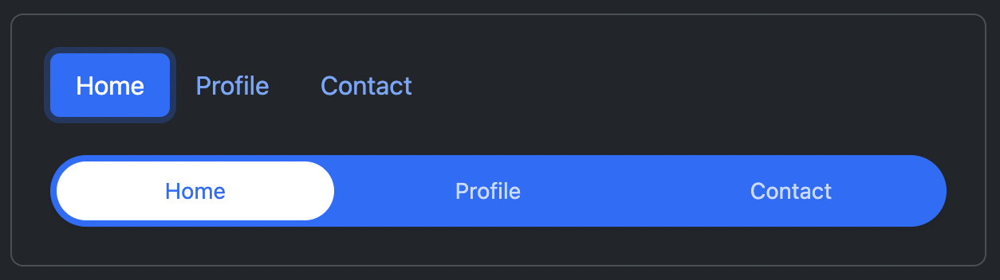

4.5/5 Pretty Good Class
10 May 2023ICS 314 is a course on Software Engineering where students learn how to develop websites using the many different tools that are available to us now. The clincher is the final project of ICS314: students design and create a web application of their own using React and Bootstrap, with the website fully deployed and hosted on Digital Ocean to allow others to access it.
Working with Frameworks
My group’s web application was called Mele Manoa. Mele Manoa aimed to create a web application where musicians from the University of Hawaii can easily find one another and get together to jam. In this project, I took on the role of manager and UI developer: I coordinated what tasks we needed to do and created parts of the web application user interface to look nice using Bootstrap. However, I also worked on the web application functionality simply because in some cases, it was easier to have one person structuring the design and functionality of one small section.

This experience allowed me to work with React Bootstrap, the main user interface framework we learned to use during this class. The React framework was especially useful, providing the ‘components’ feature. Components are an example of how frameworks can greatly aid in development work. Components are very similar in idea to normal functions in coding. They allow developers to create a piece of the user interface and use it in many other places without having to rewrite the same code over and over again. Components can even be given variables, or ‘props’, as they are called in React.
The web application needed to populate two pages from data from the users and data collections within the app and display them in little cards in a grid format on the page. I don’t know how to achieve this using simply raw HTML, CSS, and JavaScript, but with React, it was a walk in the park. The component feature of React allowed me to easily pass information into a small part of HTML and essentially copy and paste that component anywhere I needed, thus populating the page with the information it needed.
Utilizing Design Patterns
Bootstrap was crucial in aiding our development of this project. The reason why Bootstrap and other UI frameworks are so popular is that they provide incredibly easy implementations for common design patterns. Design patterns are elements of a website that are often used across many web applications, like navigation bars and pop-up notifications. Design patterns also do not need to be implemented the same way, they just serve the same purpose and look similar in design. However, just because they are commonly used, does not mean they are easy to implement in raw HTML/CSS/JavaScript. As much as I enjoy working with HTML and CSS, I will admit it can be quite a pain to wrangle each navigation link to be spaced apart just the way I want them to.

Bootstrap recognizes this problem and provides custom Bootstrap classes to style elements automatically. With React, these classes are now just custom elements used alongside the normal HTML elements. It supports design patterns such as navigation bars, accordions, dropdowns, and more. In Mele Manoa, we mainly used navigation bars and cards, but I also created a custom sidebar by combining multiple other design patterns supported by Bootstrap. Jamming a List Group into a few accordions and shoving the accordions into yet another List Group gave me just the kind of sidebar I wanted, plus an active class that was supposed to be used for buttons but works and looks just perfect in this case anyway. I go into a little more detail about my experience with design patterns here as well.
In the real world
Among everything that I have learned during this class, user interface frameworks like React and Bootstrap are what I’ve found most interesting and useful. I enjoy designing and creating UIs; figuring out the accordion sidebar using Bootstrap took me a good couple of hours. However, I enjoyed it and I’m happy I’ve created something that works. I also know that React and Bootstrap are common frameworks used by many companies with web applications, so knowing how to use React and Bootstrap is valuable information. Identifying design patterns allows me to create more user-friendly interfaces and frameworks and gives me guidance on designing user interfaces. These branches are what I enjoy most about software engineering and I have learned much about them and more in this class.
4.5/5 pretty good class besides that one guy in class who was really weird to my friend.